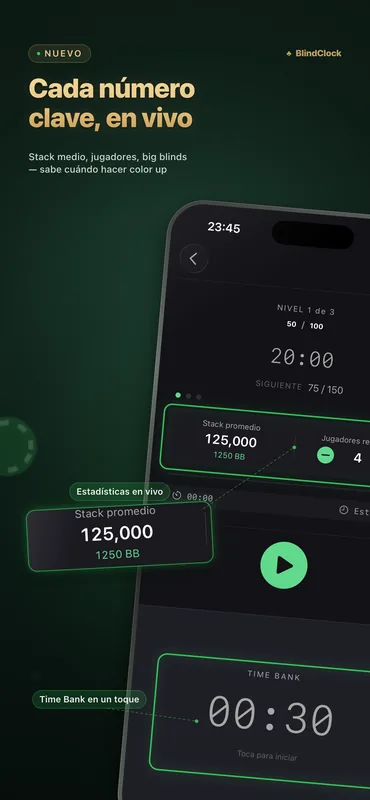
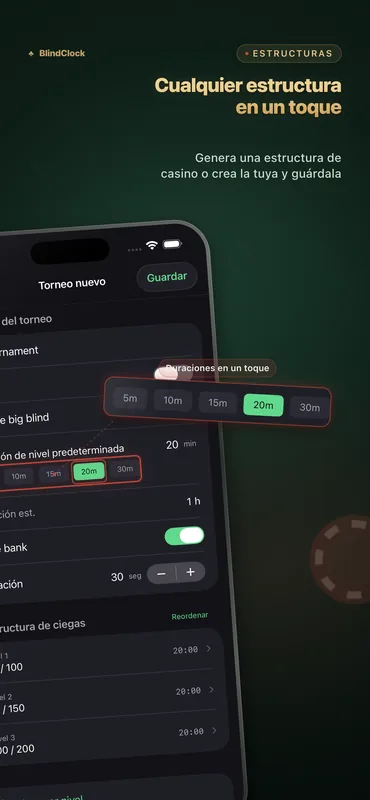
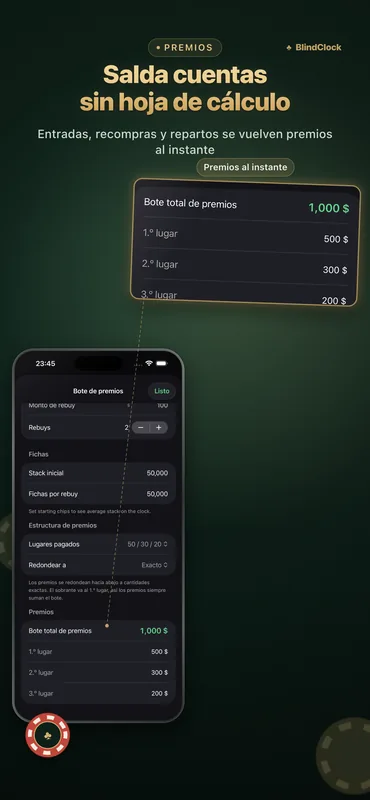

Todo lo que necesita un anfitrión
Diseñado para partidas en casa y torneos de club: preciso aunque la pantalla esté apagada y legible desde el otro lado de la mesa.
Temporizador de torneo preciso
Pausa, reanuda o salta niveles. El reloj se mantiene preciso en segundo plano y sobrevive a un cierre forzado: continúa justo donde lo dejaste.
Generador de estructura de ciegas
Indica el número de jugadores, las fichas y la duración deseada, y obtén una estructura limpia, estilo casino, con descansos en un solo toque.
Calculadora de premios
Buy-ins, rebuys y reparto de premios calculados al instante: liquida cuentas al final de la noche sin necesidad de una hoja de cálculo.
Time bank
Dales a los jugadores tiempo extra para decidir con time banks configurables, con avisos y sonidos incluidos.
Live Activity y Dynamic Island
El nivel actual aparece en tu pantalla de bloqueo y en el Dynamic Island. En un iPhone cargando, StandBy lo convierte en un reloj de torneo a pantalla completa.
Pantalla de mesa en iPad
Gira un iPad a horizontal para mostrar una cuenta regresiva gigante con las ciegas a cada lado: toda la mesa la lee de un vistazo y la pantalla se mantiene encendida.
Compartir plantillas
Exporta cualquier torneo como un archivo .blindclock y envíalo por AirDrop a un amigo: importa tu estructura exacta en un solo toque.
Sincronización con iCloud
Tus plantillas de torneo te siguen entre iPhone y iPad automáticamente: gratis para todos.
Míralo en acción



Ejemplos de estructuras de ciegas
Así se ve una estructura bien hecha: un turbo termina en cerca de 1.5 horas, un juego casero estándar en unas 3, un deep stack en 4.5 o más. El generador de BlindClock arma una para tu número exacto de jugadores, fichas y duración objetivo, en un toque.
| Nivel | Turbo · 15 min | Estándar · 20 min | Deep stack · 30 min |
|---|---|---|---|
| 1 | 25 / 50 | 25 / 50 | 25 / 50 |
| 2 | 50 / 100 | 50 / 100 | 50 / 100 |
| 3 | 100 / 200 | 75 / 150 | 75 / 150 |
| 4 | 200 / 400 | 100 / 200 | 100 / 200 |
| 5 | 300 / 600 | 150 / 300 | 150 / 300 |
| 6 | 500 / 1000 | 200 / 400 | 200 / 400 |
| 7 | — | 300 / 600 | 250 / 500 |
| 8 | — | 400 / 800 | 300 / 600 |
| 9 | — | 500 / 1000 | 400 / 800 |
| Stack inicial | 5,000 | 5,000 | 10,000 |
Las ciegas se muestran como ciega pequeña / ciega grande. Agrega un descanso de 10 minutos cada cuatro o cinco niveles — el generador de BlindClock los coloca automáticamente.
Guía completa (en inglés): cómo organizar un torneo de póker en casa →
Novedades de la 2.1
- Estadísticas de mesa en vivo — el stack promedio, los jugadores restantes y el stack promedio en ciegas grandes, actualizados en cada nivel — directo en la pantalla del reloj.
- Sabe cuándo hacer el color up — el número que los anfitriones en serio vigilan: cuándo hacer el color up, cuándo hablar de un deal, a qué ritmo va realmente el torneo. Toca para eliminar a un jugador. Gratis para todos.
- Inicio más rápido y pulido — una pantalla de inicio renovada y ajustes en toda la app.
BlindClock Pro
La versión gratuita es totalmente jugable: temporizador, Live Activity, generador, premios, sincronización y hasta 5 torneos personalizados. Pro elimina el límite con una sola compra, para siempre, en todos tus dispositivos.
- Torneos personalizados ilimitados
- Compra única
- Sin anuncios, sin suscripción
- En todos tus dispositivos